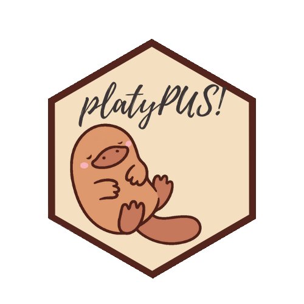

platypus

Segmentation and object detection for medical images, from a folder of pictures to a figure.


This is a rewrite, and an alpha. The package released in 2020 was built on TensorFlow through the R keras package. This one runs on PyTorch through pyplatypus, which it installs and isolates for you. The API is different and will still move. The old version is on the
masterbranch.
R has excellent tools for reading medical images and a healthy deep learning stack, and almost nothing joining them: as of August 2025 the CRAN Task View for Medical Image Analysis listed no deep learning packages at all. This is an attempt at the missing piece — not a wrapper around a Python library you then have to learn, but an R package that happens to compute in Python.
Installing
# install.packages("remotes")
remotes::install_github("maju116/platypus")There is nothing to set up afterwards. The first call that needs the engine builds an isolated Python environment for it, and everything after that uses the cache. You never choose an interpreter, activate anything, or match a version.
Coming from platypus 0.1.1? Code written against the 2020 release will not run on this one, and the changelog says what moved, what is gone, and which three names are still exported and mean something else. It is seventy lines and most readers need none of them, which is why it is there rather than here.
A worked example
library(platypus)
spec <- platypus_spec(
data = segmentation_data(
train = "stage1_train",
validation = "stage1_validation",
colormap = binary_colormap
),
models = list(
u_net("unet", input_shape = c(160, 160),
loss = loss_cce_dice(),
metrics = list(metric_dice(include_background = FALSE)),
epochs = 12),
linknet("linknet", input_shape = c(160, 160),
loss = loss_focal_tversky(alpha = 0.7),
metrics = list(metric_dice(include_background = FALSE)),
epochs = 12)
)
)
fit <- platypus_fit(spec)
evaluate(fit)
#> model architecture loss_function parameters epochs_run loss dice iou
#> 1 unet u_net cce_dice 1942594 12 0.096 0.878 0.797
#> 2 linknet linknet focal_tversky 1746754 12 0.071 0.881 0.797Read that loss column with care, which is why loss_function sits beside it: two models trained on different objectives are not on a common scale. The metrics are comparable, because they measure the mask rather than the objective.
Then look at what it did, which is the part a score cannot do for you:
plot_masks(images, prediction = predict(fit, "unet"), truth = truth,
colormap = binary_colormap)
Four of the 134 images the published dsbowl-unet weights were held out from: the best, two from the middle of the ranking and the worst, so the picture covers the distribution the model card reports rather than its top. Green is what was found, red what was missed, yellow what was invented.
In the third row nearly all of the red is a thin rim around nuclei that were otherwise located correctly — the model draws them slightly too small. If the question is how many nuclei, that hardly matters; if it is how large, it is the whole answer. No single overlap score tells those apart. The bottom row is the card’s worst case at 0.724, and it shows what that number is rather than asserting it: tiny dark nuclei in a brightfield image, where the model finds specks.
Drawn by tools/readme_figures.R, which remakes the seeded split those weights were measured on and refuses to draw unless it reproduces the card’s own mean of 0.9205 and worst case of 0.7240. The full walk-through is in vignette("data-science-bowl").
The same thing from a file
spec <- platypus_spec("experiment.yaml")Arguments and YAML produce the same object, and nothing downstream can tell which was used — so a configuration file and an R script describe the same experiment, and either can be handed to a colleague.
What is in it
Four architectures — U-Net, U-Net++, Res-U-Net and LinkNet — composable with separable convolutions, spatial dropout, interpolated or learned upsampling, deep supervision and block width.
Nine losses (IoU, Dice, cross-entropy, CCE-Dice, Focal, Tversky, Focal-Tversky, Combo, Lovász) and three metrics, each of which can leave the background out. In medical images the background is usually most of the picture, and averaging it in turns a model that found nothing into one that looks respectable.
Tiling that goes both ways — cut a large image into a grid instead of shrinking it, and get a full-size mask back.
One channel per file. channels_from = c("_t1\\.nii", "_t1ce\\.nii", "_t2\\.nii", "_flair\\.nii") stacks four MRI sequences per patient in the order you name, which is how BraTS ships and how satellite bands arrive. The order is stated rather than inferred: sorted, those names come out flair, t1, t1ce, t2 — reproducible and anatomically meaningless, and a model trained with FLAIR in channel one answers plausibly on data where channel one is T1.
The mask comes back on the scan’s grid. predict(fit, space = "source") maps each prediction out of the model’s grid onto the one its scan arrived on, undoing the resampling and the crop, so save_volumes() can write a mask that opens on top of that scan in any viewer. It returns a list rather than an array, because scans differ in size and resizing them to match is how a mask ends up describing the wrong anatomy.
Volumes. NIfTI or a folder of DICOM slices in, 3D U-Net out, patches through the same tiling. target_spacing = c(1, 1, 1) resamples every scan to a common voxel size and then crops or pads to the model’s shape, rather than squeezing each one into the same box — forty slices of 1 mm is 40 mm of patient and forty of 2.5 mm is 100 mm, so resizing alone leaves the same organ a different size in each. series_report() checks a whole export before anything trains — reading no pixels, one row per folder — and says which series have a missing slice, duplicated files, or two series sitting in one directory. A gap matters more than it sounds: it does not shorten a volume, it moves everything past it, and no metric would show that. Masks are label maps (labels = c(0, 1)) rather than colours, because that is how volume formats store them. save_volumes() writes predictions as NIfTI carrying the geometry of the scan they came from — a mask without that affine cannot be laid over its scan by any viewer — and mask_volume() reports a segmented structure in millilitres, which is the number that goes in a report, not a voxel count that means nothing outside one scanner.
Splitting by patient, not by slice. split_dataset() divides one directory into training, validation and test sets and keeps every group whole; the result goes straight into segmentation_data(). This is the most common way a segmentation result comes out several points too good: a scan is many slices of one patient, so splitting at random puts the same anatomy on both sides and validation ends up measuring memory. A group_by pattern that matches nothing is an error, never a quiet fallback.
A score per case, not one per dataset. evaluate_cases() reports each image — or each patient — and summary() gives the distribution and names the worst one. On the Data Science Bowl a model averaging Dice 0.855 turned out to score 0.006 on three images. The mean had no way of saying so.
Augmentation in 3D, with available_transforms(rank = 3) to say what can be used on a volume — albumentations supports them unevenly, and a transform that cannot is refused by name when the run starts rather than raising KeyError: 'images' from inside the library an hour in.
The parts that make an analysis fast, which is what the package was always for: combining the per-object mask files that datasets like the Data Science Bowl ship, converting between class indices and colours, overlaying, and drawing the comparison above. These work on ordinary R arrays and need no Python at all.
Published weights, by name. weights = "dsbowl-unet" in an architecture loads a trained model instead of training one — available_weights() lists what is published and what each one can and cannot do. A name is pinned to one commit of the repository holding it, so it means the same numbers next year. export_weights() writes your own the same way, with a sidecar recording what they were trained on, which is what makes them usable by anybody else.
A refusal before a wasted day. A colormap or set of labels that matches none of your masks is the quietest failure in segmentation: every mask reads as background, the loss falls because background is most of a medical image, the metrics look respectable for the same reason, and the model learns to answer “nothing here”. platypus_fit() reads a sample of the training masks first and refuses when a class the specification declares appears in none of them — which is provable rather than suspicious, because a class with no examples has no gradient towards it. inspect_masks(spec) asks the same question over as much of the data as you like, and check_masks = FALSE proceeds regardless.
A backbone where one helps. encoder = "resnet34" swaps the contracting path for a timm architecture and pretrained = TRUE loads its ImageNet weights, with freeze_encoder to keep them from being undone. Whether that is worth doing is a measured question rather than a rhetorical one — see below, and ?encoders for the table.
Boxes instead of masks
task is never typed. detection_data() and yolo3() carry it, and a specification that mixes a detection data block with a segmentation model is refused by name.
cells <- c("RBC", "WBC", "Platelets")
spec <- platypus_spec(
data = detection_data("train.csv", "valid.csv", classes = cells, mode = "config_file"),
models = list(yolo3("cells", input_shape = c(416, 416), epochs = 150,
augmentation = list(augmentation_step("HorizontalFlip", p = 0.5)),
callbacks = list(callback_cosine_annealing())))
)
fit <- platypus_fit(spec)
found <- predict(fit, split = "test") # one data frame per image, in its own pixels
plot_boxes(read_images(files, size = NULL), found, min_score = 0.5)
One frame of BCCD’s held-out split, drawn by bccd-yolo3 — weights published with this package, so the picture above costs a download rather than an afternoon. Both rare classes are there: the white cell at 1.00 and the platelet at 0.77. Of the 17 red cells annotated in this frame, 11 clear a score of 0.5 — the honest shape of the result rather than a flattering crop. min_score is yours to move, and evaluate_classes() is where that trade-off stops being a judgement about one picture: the per-class rows are what say which class a threshold is costing you.
classes is in class order and is written down rather than read from the files, because position is the class index the model learns: sorted, BCCD’s three come out Platelets, RBC, WBC, which is reproducible and anatomically meaningless.
Five things differ from the segmentation path and each is a decision rather than an omission:
Anchors are fitted to your boxes unless you name them. Measured on BCCD’s 2,805 training boxes, COCO’s nine borrowed for blood cells cover them at a mean overlap of 0.65 against 0.88 for fitted ones, which is the difference between a correction and a rewrite. They come back from detection_anchors(), and they travel with exported weights — a detector cannot be reloaded without them, because read with other anchors the same weights decode every box scaled by a fixed factor, plausibly and in the wrong places.
No loss and no metrics on the model. YOLOv3’s objective is part of its architecture and mean average precision is not one option among several.
plot_anchors() shows the fit rather than scoring it. Every annotated box as a point - width against height, both fractions of the model’s input - coloured by class, with the anchors on top. It answers what a mean overlap cannot: a coverage of 0.65 is either “every class covered adequately” or “two covered well and the third not at all”, and those want different fixes. Draw it for a split the anchors were not fitted on and a gap between the halves of your data becomes visible, which no training curve shows.
A run can leave a record. Give output_dir and platypus_fit() writes the specification, the history, and anything the run worked out that the specification does not already say - a detector’s fitted anchors, which it cannot be reloaded without. Unset, which is the default, writes nothing: files appearing in your working directory because a default exists is not a thing this package does.
No overall precision or recall in evaluate(). Averaging them over classes needs a weighting and every weighting is a different claim: over BCCD’s 4,155 red cells, 372 white and 361 platelets, a single precision is a statement about red cells. evaluate_classes() gives the per-class rows, which is the form in which they mean something, and evaluate_images() gives one row per picture — not how well on average, but which frames it fails on. Order those by missed for the ones it cannot see and by mean_matched_iou for the ones it sees and places badly; they are usually different problems. There is deliberately no average precision per image: it is the area under a ranking’s curve, and one picture is not a ranking.
A published detector to start from, so boxes on an image need no GPU:
borrowed <- platypus_fit(platypus_spec(
data = detection_data("images.csv", "images.csv", classes = cells, mode = "config_file"),
models = list(yolo3("cells", input_shape = c(416, 416),
weights = "bccd-yolo3", fit = FALSE))
))bccd-yolo3 scores mAP@0.5 0.857 on BCCD’s own held-out split — the median of five seeds, not the best, because the spread across them is 0.016 and a single number would be whichever seed got reported. available_weights() lists what is published and what it is for; the description is the part to read, and for this one it says platelets are the unreliable class.
A backbone instead of the built-in encoder
encoder = "resnet34" replaces the contracting path with a timm backbone, and pretrained = TRUE is a separate flag that loads its ImageNet weights — separate so that naming an architecture never reaches the network on a machine that has none.
u_net("polyps", input_shape = c(256, 256),
encoder = "resnet34", pretrained = TRUE, freeze_encoder = 5)What it is worth was measured rather than assumed, on three datasets, one per modality, three seeds each, every configuration judged at its best validation Dice:
| DS Bowl, microscopy | SIIM-ACR, chest X-ray | Kvasir-SEG, endoscopy | |
|---|---|---|---|
| built-in encoder, 1.9M | 0.8460 | 0.0531 | 0.5830 |
encoder = "resnet34", 9.0M |
0.7891 | 0.1073 | 0.5670 |
the same, pretrained, freeze_encoder = 5 |
0.8333 | 0.1203 | 0.5932 |
the same, encoder_learning_rate = lr/10 |
0.8326 | 0.1011 | 0.5329 |
The short version, and ?encoders has the long one:
- Use
freeze_encoder, notencoder_learning_ratealone. Freezing was better on all three; on Kvasir a tenth of the rate is the worst row in the table, below even the same backbone trained from nothing. - Do not expect a better score. Expect to reach it sooner. On Kvasir the built-in encoder needed 150, 110 and 83 epochs across its seeds; pretrained and frozen needed 64, 82 and 83.
- A bigger encoder earns its place where the target is thin. On chest X-ray, where a pneumothorax covers a median 0.59% of the frame, every backbone roughly doubles the built-in encoder — whose spread between seeds there is larger than its own mean, two of three seeds never learning at all.
- And the part worth saying plainly: platypus’s own 1.9M-parameter encoder beats ResNet-34’s 9.0M on two of the three.
Measure on your own images before trusting any of this. The regime where transfer helps is narrow, and three public datasets are three public datasets.
Learning it
Three vignettes, all precomputed from real runs — every number and figure in them came out of running the code shown.
Read them at maju116.github.io/platypus, which also carries the reference for every function. Browsing them here on GitHub does not work: GitHub has no renderer for .Rmd and serves the source, figures and all, as plain text. From R, vignette("blood-cells") opens the same document locally.
vignette("data-science-bowl") is two-dimensional microscopy: the 2018 Data Science Bowl, one mask per nucleus, from a folder of images to a figure.
vignette("blood-cells") is detection: BCCD, boxes rather than masks, opening with a published detector before any training. It ends on the finding that made the measurement honest — across five seeds the overlap of the matched boxes varies six times less than the average precision does, so on a dataset that size a point of mAP is not a result.
vignette("volumes") is CT, and generates its own synthetic data so it can be run without downloading anything: voxel spacing, splitting by patient, resampling, per-patient scores, a slice to look at, and the size of a finding in millilitres. It ends on something worth knowing — a model at Dice 0.88 whose volumes were 12% to 23% too large, which is not a contradiction and is the reason to report both.
What is not in it yet
Ensembling. Classification. Boxes in three dimensions - yolo3() is 2D and says so rather than accepting a third number and ignoring it.
Augmentation in 3D works, but unevenly, because albumentations supports volumes for most of its transforms and not all of them. Every transform in a 3D specification is probed while the pipeline is built, so one that cannot take a volume is named at that point rather than failing mid-run; available_transforms(rank = 3) lists what is usable.
Resampling volumes to isotropic spacing is deliberate rather than automatic: volume_info() reads and reports the spacing, and target_spacing applies it, but applying it changes the voxel grid the model sees, which is a decision to take rather than a default to inherit.
The package is not on CRAN, and not submitted yet. The name also collides, case-insensitively, with an unrelated immunology package archived there in February 2026, which is a question to settle before a submission rather than after.
About the engine
pyplatypus is installed automatically into an environment kept apart from any other Python on the machine. This matters because the R keras and tensorflow packages of 2020 shared one installation with everything else, and an unrelated change could break an R session. Nothing here touches a Python anyone else uses.
Three things worth knowing.
The first call downloads about 5 GB, most of it CUDA libraries that PyTorch ships by default whether or not there is a GPU. It is cached afterwards, and everything works offline once it is — which is the install path for a machine without internet access: run it once somewhere with a connection and carry ~/.cache/uv across.
On a GeForce GTX 10-series card or older, ask for the older PyTorch first:
library(platypus)
platypus_use_torch("pascal")PyTorch 2.8 onwards ships CUDA 13 builds, and CUDA 13 dropped that whole generation of cards. Without this, everything runs on the processor instead — perhaps ten times slower, with nothing obviously wrong. platypus_device() will tell you which is happening.
If the engine will not start and the error says there is no such version of pyplatypus, the version does exist and uv is answering from a cached copy of the package index — likely because the engine was published minutes ago. Clear the index cache:
rm -rf "$(uv cache dir)"/simple-v*Only the index: that directory is tens of megabytes, while the wheels beside it are tens of gigabytes and include PyTorch. uv cache clean pyplatypus is not enough — it removes that package’s built artifacts and leaves behind the index response saying the version does not exist.
Licence
MIT.